Three views of Spendifre — how the system moves data and where each control sits, how users get work done per role, and how the engineering pieces interact at build, test, run and deploy.
System & data flows18 diagrams
How Spendifre moves data and where each control sits in the path.
01Application map & navigation
02Authentication — Entra ID, OIDC + PKCE
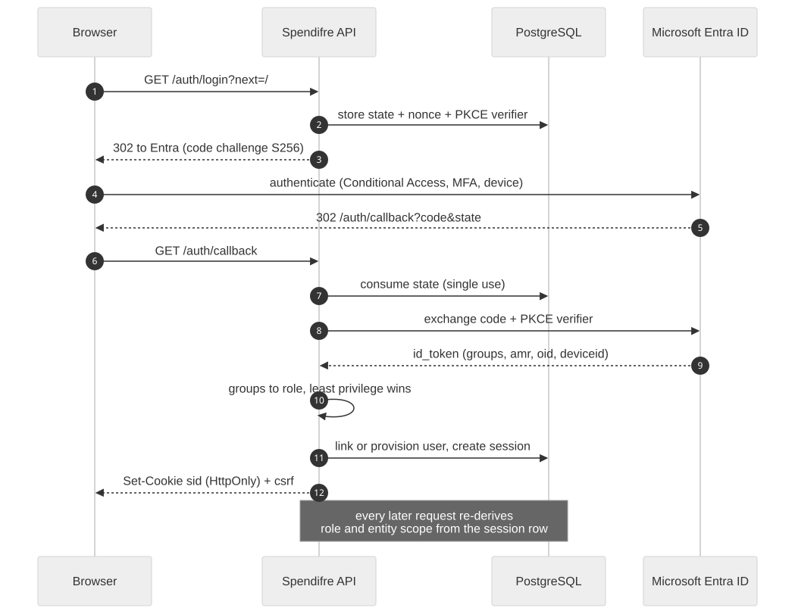
03Request lifecycle & authorisation gate
04Budget entry — grid edit round trip
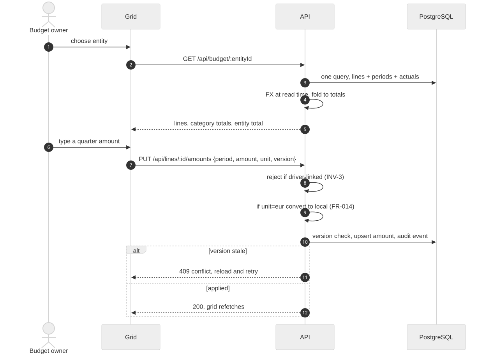
05Line detail, drivers and dormancy
06Bulk operations over a selection
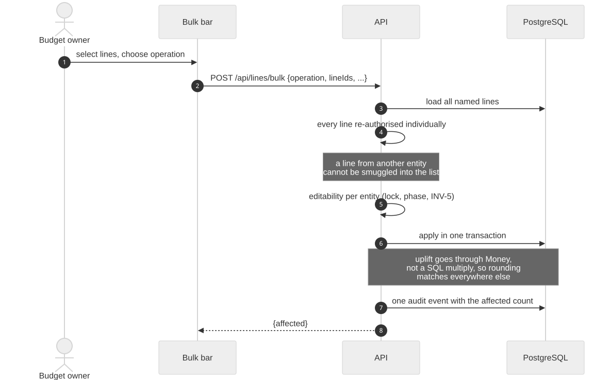
07Submission & approval state machine
08Cost centre lifecycle & segregation of duties
09Actuals, elapsed periods and pace
10FX restatement at read time
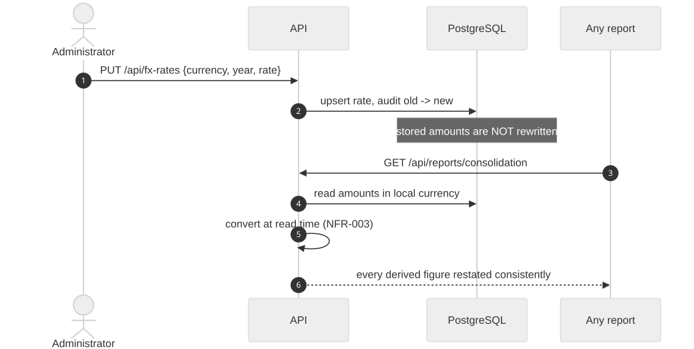
11Consolidation & the INV-4 fold
12Capex asset life & depreciation
13Allocations & chargeback14Append-only audit & hash chain15Retention job & data subject rights